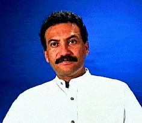

Nació en Caracas el 1 de Mayo de 1955, en Venezuela.
Desde muy joven sintió pasión por el arte, canalizando sus inquietudes a travéz de la música y, posteriormente, también por la creación de juguetes de madera.
Cuenta con varias giras musicales en diversos países de América Latina.
Sus juguetes de madera han sido exhibidos en diferentes salas de exposiciones dedicadas al juguete. (Foto: Catálogo Fundación Polar, Caracas).